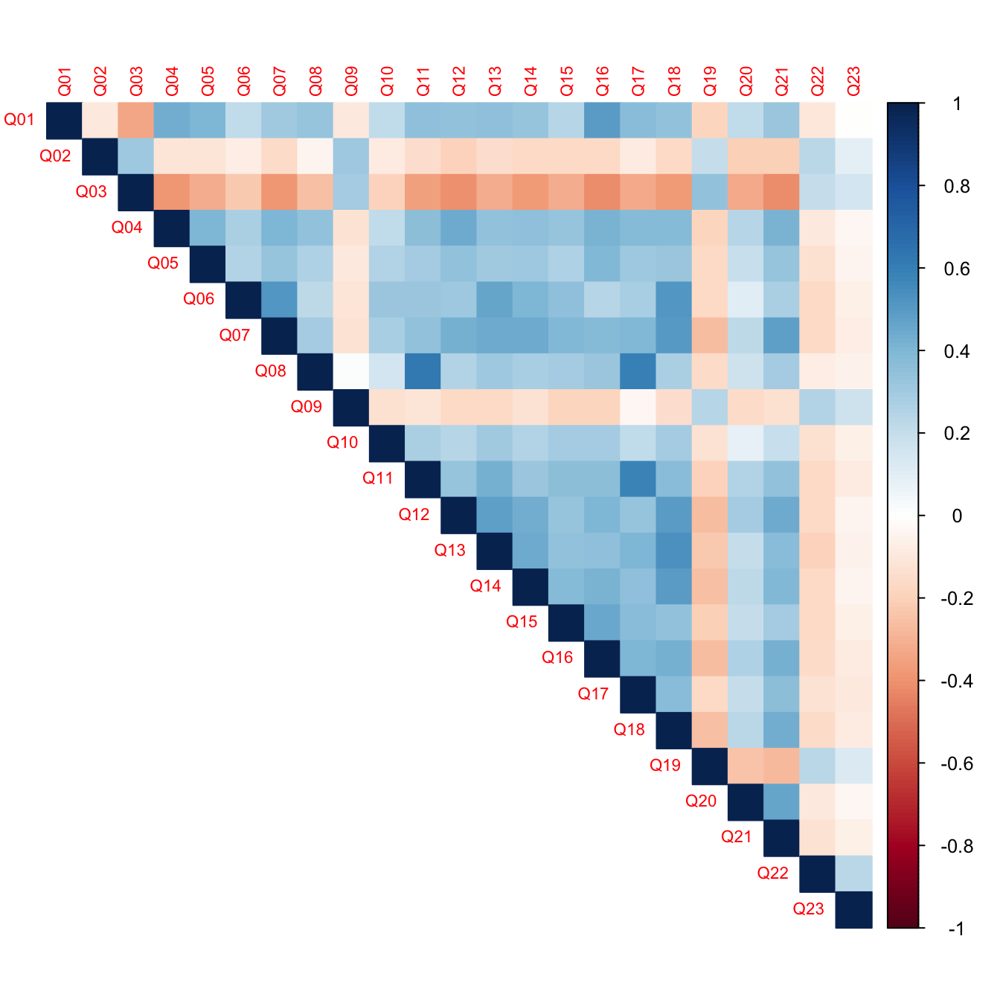
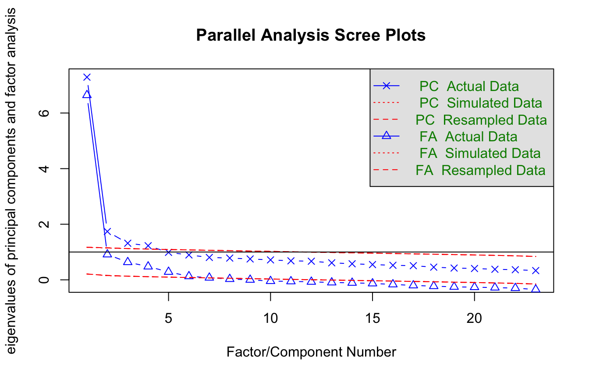
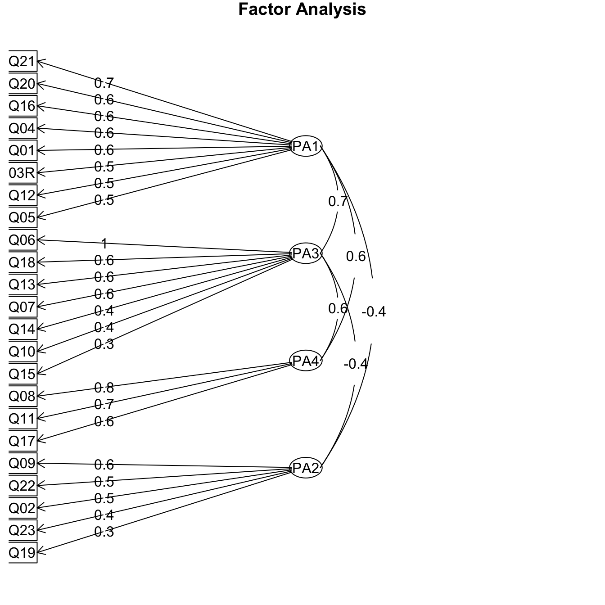

library(tidyverse)
library(haven)
library(psych)
library(corrplot)9 Exploratory Factor Analysis
Many constructs in education research, such as anxiety, motivation, or engagement, cannot be measured directly. Instead, we measure them with sets of survey items. Exploratory factor analysis (EFA) asks how many underlying dimensions (factors) explain the correlations among a set of items, and which items go with which factor.
In this chapter, we start with reliability (Cronbach’s alpha) for a single subscale. Then we use EFA to explore the structure of a full questionnaire.
9.1 The data
We use the SPSS Anxiety Questionnaire (SAQ) from Andy Field’s Discovering Statistics Using SPSS. It has 23 items about anxiety related to statistics, computers, and mathematics, completed by 2,571 students. Each item is rated from 1 (strongly agree) to 5 (strongly disagree).
saq <- read_dta("data/saq.dta")
glimpse(saq)Rows: 2,571
Columns: 23
$ Q01 <dbl+lbl> 2, 1, 2, 3, 2, 2, 2, 2, 3, 2, 2, 2, 3, 2, 2, 3, 1, 2, 2, 2, 1,…
$ Q02 <dbl+lbl> 1, 1, 3, 1, 1, 1, 3, 2, 3, 4, 1, 1, 1, 2, 2, 1, 2, 2, 3, 1, 2,…
$ Q03 <dbl+lbl> 4, 4, 2, 1, 3, 3, 3, 3, 1, 4, 5, 3, 3, 1, 3, 2, 5, 3, 4, 1, 3,…
$ Q04 <dbl+lbl> 2, 3, 2, 4, 2, 2, 2, 2, 4, 3, 2, 3, 4, 2, 4, 2, 2, 3, 2, 2, 2,…
$ Q05 <dbl+lbl> 2, 2, 4, 3, 2, 4, 2, 2, 5, 2, 2, 4, 3, 2, 2, 2, 1, 3, 3, 3, 4,…
$ Q06 <dbl+lbl> 2, 2, 1, 3, 3, 4, 2, 2, 3, 1, 1, 3, 2, 2, 2, 2, 1, 4, 1, 4, 1,…
$ Q07 <dbl+lbl> 3, 2, 2, 4, 3, 4, 2, 2, 5, 2, 2, 3, 3, 3, 3, 2, 1, 3, 1, 4, 2,…
$ Q08 <dbl+lbl> 1, 2, 2, 2, 2, 2, 2, 2, 5, 2, 2, 1, 3, 2, 2, 2, 1, 2, 1, 1, 1,…
$ Q09 <dbl+lbl> 1, 5, 2, 2, 4, 4, 3, 4, 3, 3, 5, 3, 2, 2, 2, 2, 4, 5, 5, 5, 1,…
$ Q10 <dbl+lbl> 2, 2, 2, 4, 2, 3, 2, 2, 3, 2, 2, 2, 3, 3, 3, 3, 1, 2, 2, 1, 1,…
$ Q11 <dbl+lbl> 1, 2, 3, 2, 2, 2, 2, 2, 5, 2, 1, 2, 3, 2, 2, 2, 1, 3, 1, 2, 1,…
$ Q12 <dbl+lbl> 2, 3, 3, 2, 3, 4, 2, 3, 5, 3, 3, 3, 4, 4, 3, 3, 2, 3, 3, 5, 4,…
$ Q13 <dbl+lbl> 2, 1, 2, 2, 3, 3, 2, 2, 5, 2, 1, 2, 4, 2, 2, 2, 1, 3, 1, 2, 1,…
$ Q14 <dbl+lbl> 2, 3, 4, 3, 2, 3, 2, 2, 5, 1, 2, 2, 4, 4, 3, 3, 1, 3, 2, 5, 1,…
$ Q15 <dbl+lbl> 2, 4, 2, 3, 2, 5, 2, 3, 5, 2, 1, 3, 4, 4, 3, 2, 1, 4, 2, 5, 1,…
$ Q16 <dbl+lbl> 3, 3, 3, 3, 2, 2, 2, 2, 5, 3, 2, 3, 4, 4, 4, 3, 2, 3, 3, 5, 2,…
$ Q17 <dbl+lbl> 1, 2, 2, 2, 2, 3, 2, 2, 5, 2, 2, 2, 3, 2, 2, 2, 2, 2, 1, 2, 1,…
$ Q18 <dbl+lbl> 2, 2, 3, 4, 3, 5, 2, 2, 5, 2, 2, 2, 3, 4, 3, 3, 1, 2, 1, 5, 1,…
$ Q19 <dbl+lbl> 3, 3, 1, 2, 3, 1, 3, 4, 2, 3, 5, 3, 2, 1, 3, 2, 4, 2, 4, 1, 2,…
$ Q20 <dbl+lbl> 2, 4, 4, 4, 4, 5, 2, 3, 5, 3, 3, 4, 4, 5, 4, 3, 2, 3, 2, 5, 4,…
$ Q21 <dbl+lbl> 2, 4, 3, 4, 2, 3, 2, 2, 5, 2, 2, 3, 4, 5, 4, 2, 1, 3, 2, 5, 3,…
$ Q22 <dbl+lbl> 2, 4, 2, 4, 4, 1, 4, 4, 3, 4, 5, 4, 3, 3, 4, 3, 4, 3, 4, 5, 2,…
$ Q23 <dbl+lbl> 5, 2, 2, 3, 4, 4, 4, 4, 3, 4, 5, 4, 4, 1, 4, 4, 4, 4, 4, 5, 5,…9.1.1 Reverse coding
Most items are worded so that agreeing indicates more anxiety (for example, Q01: “Statistics makes me cry”). Q03, “Standard deviations excite me,” is worded in the opposite direction. A correlation plot shows the problem: Q03 correlates negatively with most of the other items.
cor(saq) |>
corrplot(method = "color", type = "upper", tl.cex = 0.7)
We reverse-code Q03 by subtracting it from 6 (one more than the highest response) and drop the original:
saq_clean <- saq |>
mutate(Q03R = 6 - Q03) |>
select(-Q03)9.2 Reliability
9.2.1 Cronbach’s alpha
Seven items ask about computers (Q06, Q07, Q10, Q13, Q14, Q15, and Q18). If we plan to combine them into a subscale, we should first check that they hang together. Cronbach’s alpha is the most common index of internal consistency.
computers <- saq_clean |>
select(Q06, Q07, Q10, Q13, Q14, Q15, Q18)
psych::alpha(computers)
Reliability analysis
Call: psych::alpha(x = computers)
raw_alpha std.alpha G6(smc) average_r S/N ase mean sd median_r
0.82 0.82 0.81 0.4 4.6 0.0052 2.6 0.71 0.39
95% confidence boundaries
lower alpha upper
Feldt 0.81 0.82 0.83
Duhachek 0.81 0.82 0.83
Reliability if an item is dropped:
raw_alpha std.alpha G6(smc) average_r S/N alpha se var.r med.r
Q06 0.79 0.79 0.77 0.38 3.7 0.0063 0.0081 0.38
Q07 0.79 0.79 0.77 0.38 3.7 0.0063 0.0079 0.36
Q10 0.82 0.82 0.80 0.44 4.7 0.0053 0.0043 0.44
Q13 0.79 0.79 0.77 0.39 3.8 0.0062 0.0081 0.38
Q14 0.80 0.80 0.77 0.39 3.9 0.0060 0.0085 0.36
Q15 0.81 0.81 0.79 0.41 4.2 0.0056 0.0095 0.44
Q18 0.79 0.78 0.76 0.38 3.6 0.0064 0.0058 0.38
Item statistics
n raw.r std.r r.cor r.drop mean sd
Q06 2571 0.75 0.74 0.68 0.62 2.2 1.12
Q07 2571 0.75 0.73 0.68 0.62 2.9 1.10
Q10 2571 0.54 0.57 0.44 0.40 2.3 0.88
Q13 2571 0.72 0.73 0.67 0.61 2.4 0.95
Q14 2571 0.70 0.70 0.64 0.58 2.9 1.00
Q15 2571 0.64 0.64 0.54 0.49 2.8 1.01
Q18 2571 0.76 0.76 0.72 0.65 2.6 1.05
Non missing response frequency for each item
1 2 3 4 5 miss
Q06 0.27 0.44 0.13 0.10 0.06 0
Q07 0.07 0.34 0.26 0.24 0.09 0
Q10 0.14 0.57 0.18 0.10 0.02 0
Q13 0.12 0.48 0.25 0.12 0.03 0
Q14 0.06 0.31 0.38 0.18 0.07 0
Q15 0.07 0.39 0.30 0.18 0.06 0
Q18 0.14 0.37 0.31 0.12 0.06 0We write psych::alpha() to make sure R uses the alpha() function from psych, since other packages have functions with the same name. The raw alpha of 0.82 suggests good internal consistency. Values of 0.70 or higher are usually considered acceptable.
The “Reliability if an item is dropped” table shows what alpha would be without each item. If dropping an item would raise alpha, that item may not fit the scale well.
9.2.2 Adding an item that does not fit
What happens if we add Q23, “If I’m good at statistics my friends will think I’m a nerd”?
computers2 <- saq_clean |>
select(Q06, Q07, Q10, Q13, Q14, Q15, Q18, Q23)
psych::alpha(computers2)Some items ( Q23 ) were negatively correlated with the first principal component and
probably should be reversed.
To do this, run the function again with the 'check.keys=TRUE' option
Reliability analysis
Call: psych::alpha(x = computers2)
raw_alpha std.alpha G6(smc) average_r S/N ase mean sd median_r
0.76 0.76 0.76 0.28 3.1 0.0068 2.7 0.62 0.34
95% confidence boundaries
lower alpha upper
Feldt 0.74 0.76 0.77
Duhachek 0.74 0.76 0.77
Reliability if an item is dropped:
raw_alpha std.alpha G6(smc) average_r S/N alpha se var.r med.r
Q06 0.70 0.71 0.71 0.26 2.4 0.0085 0.0483 0.30
Q07 0.70 0.71 0.71 0.26 2.4 0.0085 0.0482 0.32
Q10 0.74 0.75 0.75 0.29 2.9 0.0073 0.0571 0.39
Q13 0.71 0.71 0.72 0.26 2.4 0.0083 0.0493 0.32
Q14 0.71 0.71 0.72 0.26 2.5 0.0082 0.0512 0.32
Q15 0.73 0.73 0.74 0.28 2.7 0.0077 0.0556 0.32
Q18 0.70 0.70 0.71 0.25 2.4 0.0086 0.0450 0.32
Q23 0.82 0.82 0.81 0.40 4.6 0.0052 0.0077 0.39
Item statistics
n raw.r std.r r.cor r.drop mean sd
Q06 2571 0.73 0.72 0.68 0.597 2.2 1.12
Q07 2571 0.73 0.72 0.68 0.597 2.9 1.10
Q10 2571 0.53 0.55 0.44 0.383 2.3 0.88
Q13 2571 0.71 0.71 0.67 0.590 2.4 0.95
Q14 2571 0.69 0.69 0.64 0.562 2.9 1.00
Q15 2571 0.62 0.63 0.54 0.473 2.8 1.01
Q18 2571 0.74 0.74 0.72 0.622 2.6 1.05
Q23 2571 0.12 0.11 -0.10 -0.092 3.4 1.04
Non missing response frequency for each item
1 2 3 4 5 miss
Q06 0.27 0.44 0.13 0.10 0.06 0
Q07 0.07 0.34 0.26 0.24 0.09 0
Q10 0.14 0.57 0.18 0.10 0.02 0
Q13 0.12 0.48 0.25 0.12 0.03 0
Q14 0.06 0.31 0.38 0.18 0.07 0
Q15 0.07 0.39 0.30 0.18 0.06 0
Q18 0.14 0.37 0.31 0.12 0.06 0
Q23 0.06 0.12 0.27 0.42 0.12 0Alpha drops to 0.76, and psych warns that Q23 is negatively correlated with the rest of the scale. The item-dropped table confirms that removing Q23 would restore alpha to 0.82.
9.2.3 Creating a scale score
Once we are satisfied with a subscale, scoreItems() computes each student’s mean across its items:
keys <- list(computers = c("Q06", "Q07", "Q10", "Q13", "Q14", "Q15", "Q18"))
scales <- scoreItems(keys, saq_clean, totals = FALSE)
saq_scored <- saq_clean |>
bind_cols(as_tibble(scales$scores))
describe(saq_scored$computers)9.3 Exploratory factor analysis
Alpha tells us whether a set of items is internally consistent. It does not tell us whether the items measure one construct or several. For that, we turn to EFA.
9.3.1 Are the data suitable?
Two checks tell us whether the items are correlated enough for factor analysis. The Kaiser-Meyer-Olkin (KMO) measure of sampling adequacy ranges from 0 to 1. Values above 0.80 are generally considered good. Bartlett’s test of sphericity tests whether the correlation matrix differs from an identity matrix (no correlations at all). A significant result is what we want.
KMO(saq_clean)$MSA[1] 0.9302245cortest.bartlett(cor(saq_clean), n = nrow(saq_clean))$chisq
[1] 19334.49
$p.value
[1] 0
$df
[1] 253The KMO is 0.93, and Bartlett’s test is significant. Both suggest the data are suitable for factor analysis.
9.3.2 How many factors?
The most important decision in EFA is how many factors to retain. Several aids are available:
- Kaiser’s rule: retain components with eigenvalues greater than 1.
- The scree plot: retain the factors before the plot levels off.
- Parallel analysis: retain factors whose eigenvalues are larger than those from random data of the same size. This is generally the most accurate of the three.
fa.parallel() draws a scree plot with parallel analysis results for both principal components (PC) and factors (FA):
set.seed(663)
fa.parallel(saq_clean, fm = "pa", fa = "both")
Parallel analysis suggests that the number of factors = 7 and the number of components = 4 The aids do not agree perfectly. Parallel analysis suggests six factors, but four components. Four principal components also have eigenvalues greater than 1. Because two of the guides point to four, and because the item content covers four themes (statistics, computers, mathematics, and peers), we retain four. In your own work, the decision should weigh these statistical aids alongside theory and interpretability.
9.3.3 Extracting the factors
fa() fits the factor model. We use principal axis factoring (fm = "pa"), a common extraction method that does not assume multivariate normality. We start without rotation:
efa_unrotated <- fa(saq_clean, nfactors = 4, rotate = "none", fm = "pa")
print(efa_unrotated$loadings, cutoff = 0.3)
Loadings:
PA1 PA2 PA3 PA4
Q01 0.557
Q02 0.372
Q04 0.607
Q05 0.522
Q06 0.552 0.488
Q07 0.663
Q08 0.546 0.482
Q09 0.460
Q10 0.404
Q11 0.646 0.313
Q12 0.643
Q13 0.650
Q14 0.628
Q15 0.559
Q16 0.653
Q17 0.632 0.359
Q18 0.684
Q19 -0.397
Q20 0.407
Q21 0.633
Q22
Q23
Q03R 0.605
PA1 PA2 PA3 PA4
SS loadings 6.744 1.127 0.814 0.624
Proportion Var 0.293 0.049 0.035 0.027
Cumulative Var 0.293 0.342 0.378 0.405A loading is the correlation between an item and a factor. We hide loadings below 0.3 to make the pattern easier to read. In the unrotated solution, nearly every item loads on the first factor. This is typical: unrotated factor analysis extracts as much variance as possible into the first factor, which makes the solution hard to interpret.
9.3.4 Rotation
Rotation redistributes the variance across factors to approach simple structure, in which each item loads strongly on one factor and weakly on the others. Rotation does not change how well the model fits. It changes only how the variance is divided among the factors.
There are two families of rotation:
- Orthogonal rotations (such as varimax) keep the factors uncorrelated.
- Oblique rotations (such as promax) allow the factors to correlate.
efa_varimax <- fa(saq_clean, nfactors = 4, rotate = "varimax", fm = "pa")
print(efa_varimax$loadings, cutoff = 0.3, sort = TRUE)
Loadings:
PA1 PA3 PA4 PA2
Q01 0.504
Q04 0.527
Q12 0.510 0.398
Q16 0.543
Q21 0.594
Q03R 0.505 0.399
Q06 0.752
Q07 0.364 0.559
Q13 0.564
Q18 0.366 0.612
Q08 0.759
Q11 0.688
Q17 0.641
Q09 -0.559
Q02 -0.464
Q05 0.436
Q10 0.380
Q14 0.388 0.485
Q15 0.377
Q19 -0.375
Q20 0.465
Q22 -0.465
Q23 -0.329
PA1 PA3 PA4 PA2
SS loadings 3.034 2.854 1.986 1.435
Proportion Var 0.132 0.124 0.086 0.062
Cumulative Var 0.132 0.256 0.342 0.405efa_promax <- fa(saq_clean, nfactors = 4, rotate = "promax", fm = "pa")
print(efa_promax$loadings, cutoff = 0.3, sort = TRUE)
Loadings:
PA1 PA3 PA4 PA2
Q01 0.559
Q04 0.566
Q12 0.508
Q16 0.567
Q20 0.582
Q21 0.669
Q03R 0.530
Q06 0.961
Q07 0.550
Q13 0.566
Q18 0.630
Q08 0.839
Q11 0.717
Q17 0.643
Q09 0.565
Q02 0.450
Q05 0.454
Q10 0.405
Q14 0.444
Q15 0.302
Q19 0.323
Q22 0.480
Q23 0.363
PA1 PA3 PA4 PA2
SS loadings 2.956 2.589 1.753 1.162
Proportion Var 0.129 0.113 0.076 0.051
Cumulative Var 0.129 0.241 0.317 0.368In both rotated solutions, the items sort into four groups. With promax, each item loads on only one factor, which is closer to simple structure. The four factors appear to correspond to:
- fear of statistics (PA1)
- fear of computers (PA3)
- fear of mathematics (PA4)
- fear of negative evaluation from peers (PA2)
The promax solution also estimates the correlations among the factors:
round(efa_promax$Phi, 2) PA1 PA3 PA4 PA2
PA1 1.00 0.68 0.55 -0.44
PA3 0.68 1.00 0.58 -0.37
PA4 0.55 0.58 1.00 -0.20
PA2 -0.44 -0.37 -0.20 1.00Several factors correlate at 0.5 or higher. In most social science settings, we would expect related constructs like these to be correlated. This suggests that an oblique rotation is the more realistic choice here.
fa.diagram() shows the promax solution as a path diagram:
fa.diagram(efa_promax)
9.3.5 Factor scores
Finally, we can estimate each student’s score on each factor:
factor_scores <- as_tibble(efa_promax$scores)
glimpse(factor_scores)Rows: 2,571
Columns: 4
$ PA1 <dbl> -1.13514544, -0.42373326, 0.09474844, 0.70888719, -0.75336336, 0.2…
$ PA3 <dbl> -0.656897900, -0.569933489, -0.337264493, 0.585706832, -0.01731724…
$ PA4 <dbl> -1.53016147, -0.38297269, -0.03502744, -0.23964113, -0.42449977, 0…
$ PA2 <dbl> -0.10078520, 0.59963412, -0.63254390, -0.45306944, 0.56114971, -0.…These scores can be used in later analyses, much like the scale score we created with scoreItems(). Chapter 10 takes the next step: testing whether a hypothesized factor structure fits the data.